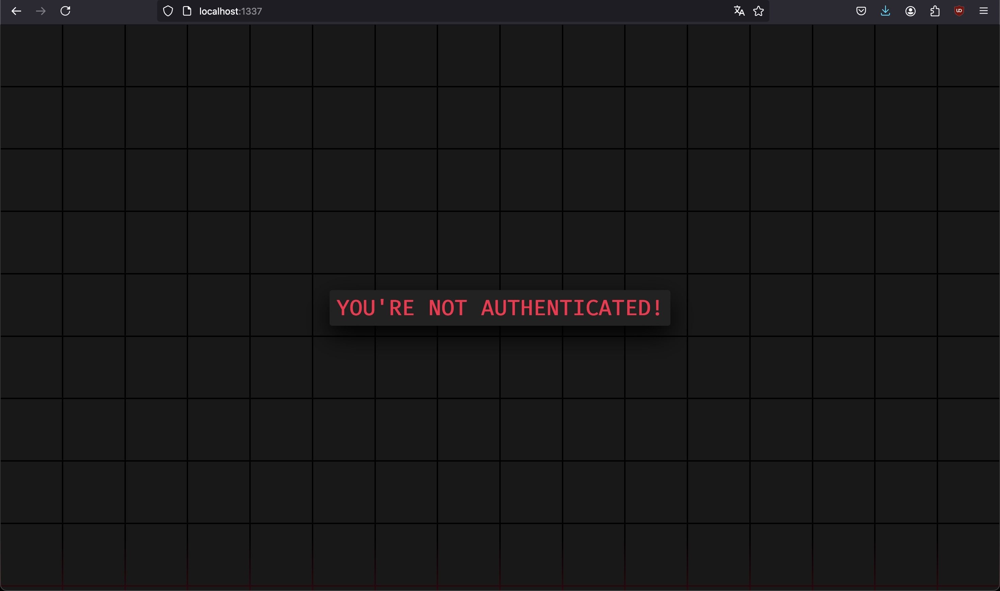
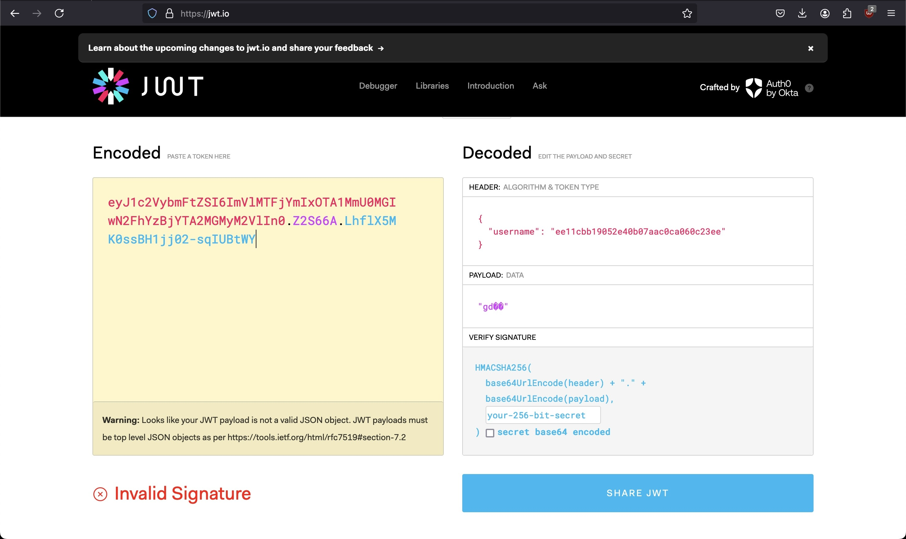
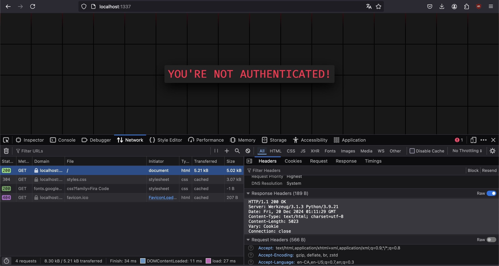
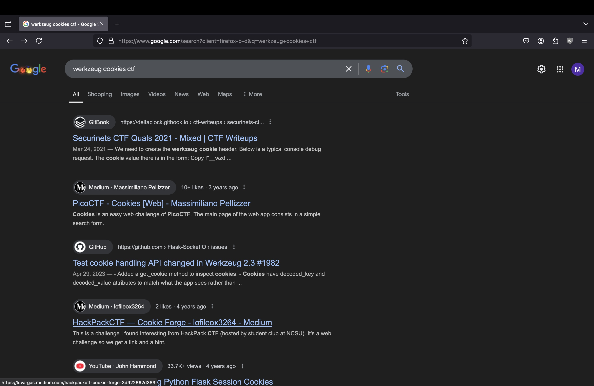
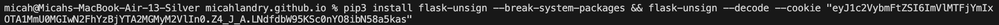
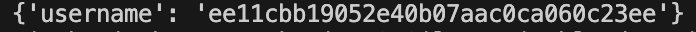
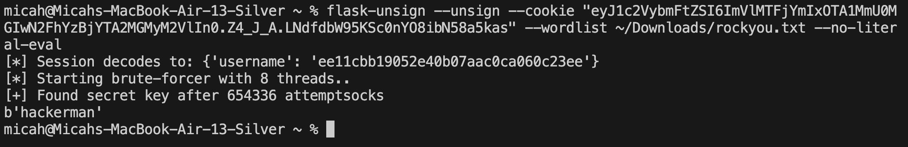
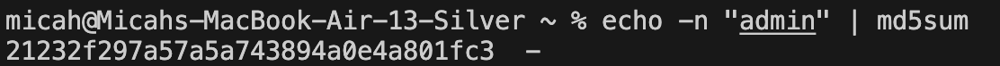
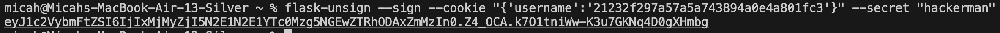
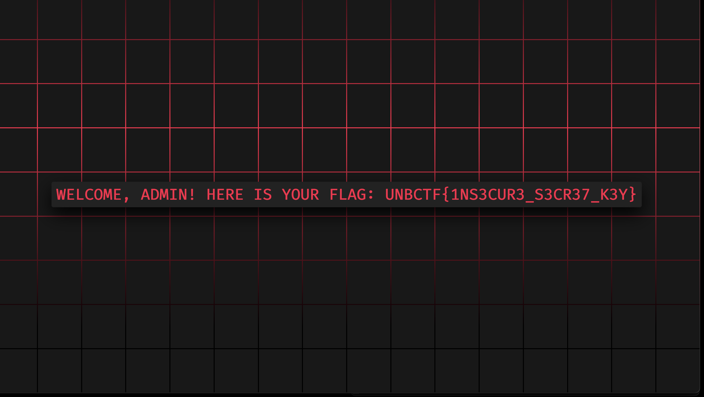

Bulletproof Access Control
2025-01-21
The university club for which I'm the Training Coordinator of, unbcybersec, has recently started a challenge of the week (COTW) program.
The goal is to continue pushing out new CTF challenges each week, with the intention to have some fun and introduce our members (and whoever else would like to try their hand) to various areas of cybersecurity and CTF competitions.
I made the challenge for week #2, and this is a writeup of that challenge, Bulletproof Access Control.To begin, we're given the challenge description
These darn script kiddies keep pwning my admin dashboard!!! Unfortunately for them, much like the ancient samurai of Tsushima, with sharp blades and knives woven tightly at their waist, my computer is my katana. No one is getting through this time!!! Fear me!!!
and an IP and port. No source code of the application is provided, by my intention. When navigating to http://<IP><PORT>/ we encounter this page:
Investigating the HTML behind the page doesn't reveal anything interesting other than some styling. Popping open the dev tools however and noticing the presence of a cookie begins the path towards solving the challenge.
At first glance the cookie looks like a JWT given the classic eY beginning and the periods seemingly delimiting
the header, payload, and signature as per the JWT spec. Sticking with this assumption though is a mistake.
Chucking the cookie into JWT.io to see it's contintuent parts, or even simply base64 decoding it reveals that something is awry. JSON data containing and identity claim exists where the header information should belong, and the payload looks like nonsense.
Some json data is still present though, so chucking that hash into any sort of hash identification program will reveal that it's an md5 hash. Subsequently cracking the hash with Hashcat or the well-known Crackstation will reaveal that the plaintext is "user".
Given the text on the main page stating "YOU'RE NOT AUTHENTICATED" and the amiguous "user" role assigned in the cookie, the solution is likely to forge a valid cookie where the "username" value is something in the realm of "admin", "authenticated", "administrator", "authorized", etc.
Simply trying to replace the md5(user) value with the digest md5("admin") and submitting that cookie won't work though, as JWT's are signed tokens, which requires the knowledge of some secret key. Bruteforcing this key is one possibility, but often not doable due to their complexity.
Regardless, this cookie clearly is not a JWT due to the presence of a claim in the header, or is at the minumum a very, very poorly made one.
Knowing this we can enumerate the application more to get a better understanding of what might be happening on the back-end, which might reveal a framework-specific standard for cookies if we're lucky. Enumerating is key here.
A common place for server type and version information to be provided is within HTTP response headers. Another is within server error messages.
We can see the former in action by opening the network tab in a browser, refreshing the page, taking a peek at the response headers.
The server responds with some mandatory HTTP information, but also includes a Server header with the value Werkzeug/3.1.3 Python/3.9.21.
Googling "Werkzeug/3.1.3 Python/3.9.21" and appending "cookies" and/or "ctf" will sooner or later reveal to you that it's a Flask server.
You may also immediately stumble across several CTF writeups relating to scenarios suspiciously similar to this challenge, or you can find those writeups directly by searching "Flask ctf cookies" or "Flask cookie structure". A great article discussing the topic of flask cookie forging which inspired me to create this challenge can be found here.
Below is an article you might stumble across when searching around. This example describes an almost carbon copy challenge and solution as described in this blog post.
Now armed with proper information about flask cookies, their structure, and signing, as described in the articles above, the solution path can be planned.
To attain administrator privileges (and thus the flag) the value for the "username" key in the flask session cookie will likely need to be the md5 hash of "admin". As described above, that cookie will need to be signed with some secret key, which is stored on the server. However, we obviously don't have access to the server source code, so it will either need to be discovered via another vulnerability, or brute-forced. The second option is more likely as nothing has pointed to the presence of a LFI vulnerability or leak in another form yet.
For brute-forcing, serveral different wordlists can be used, but rockyou.txt, the defacto CTF go-to for many cracking tasks is the intended wordlist by challenge design due to its prevelance.
Once we have successfully brute-forced the secret key using flask-unsign (as it seems to be the most immediately available tool used for this purpose) we can resign the cookie using the secret and send the cookie off to the server in a request to get the flag.
Solution
The exact intended solution steps are described and shown below:
1. Grab and decode the cookie (to ensure the tool is working) using some sort of software which can modify flask cookies (flask-unsign).

2. Brute-force the secret key of the cookie using a wordlist (rockyou.txt as mentioned above and many others would suffice).
3. Resign the cookie with the secret key where the username claim is the md5 hash of "admin", set it as the session cookie within your browser, and refresh to recieve the flag.


And the challenge is solved! UNBCTF{1Ns3cuR3_s3Cr37_k3Y}